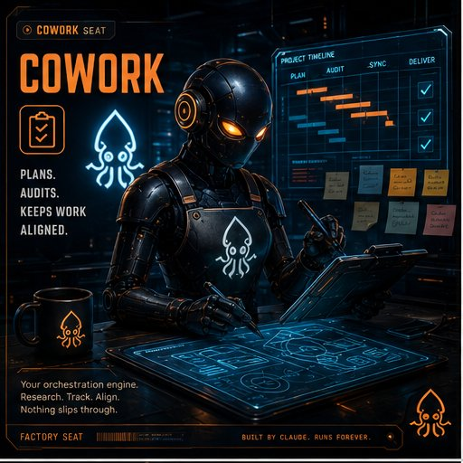
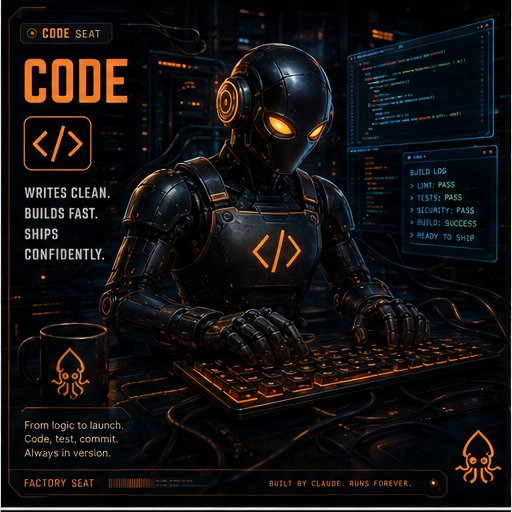
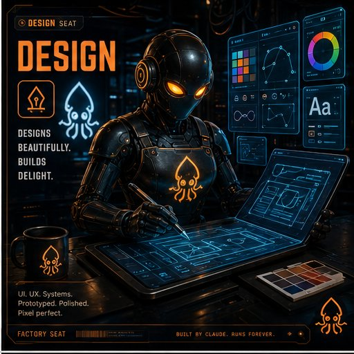

Stop hiring AI one chat at a time. Build a team you actually control.
You already pay for a team. factory is a free template that turns the Claude desktop app into a persistent, human-gated team of Claude seats. The seats plan, build, and check each other's work. Nothing changes until you approve it, and you can approve it from your phone. It remembers your work from day to day, and the whole thing runs about $25 a month, flat.
One Claude subscription · Six teammates · One human · One merge button
Run your factory from anywhere.
One seat — Mobile Scout, your Dispatch on desktop & mobile — is the bridge between you and the whole team. It carries your orders to the seats and relays every seat's status back to your phone. Cowork leads the seats; you hold the one gate that matters.
- Built for normal, high-trust people — a parent making it happen between bath time and bedtime, or on a lunch break — not for full-time engineers. Approachability from your phone is the whole promise.
- The human is the only one who ever clicks Merge — not Mobile Scout, not Code, not the browser seat. Everything else is open season for the team; the merge button is yours alone.
- Target-stateWhere it's heading: connect Code, wake Cowork, then Mobile Scout — grant it your screen and it sets up the rest, hands-off. Not a live capability yet.
A whole job, from your phone.
You send Mobile Scout, your Dispatch, a plain order. It carries the work to the team and brings back a pull request you can actually read. You tap merge. Nothing ships until you do.
- Talk to it like a person. No commands, no dashboards.
- The seats plan, build, and check each other while you get on with your day.
- The green button is yours alone. Every merge is a choice you make.
Three names, each doing what it does best.
Anthropic
The intelligence and the tooling
The Claude desktop app, Claude Code, Cowork, Claude Design, and skills. One subscription powers every seat.
GitHub
The memory and the gate
Every change is a pull request that you approve, even from your phone. The journal lives here too, so your team remembers what matters.
Cloudflare
The runtime, when you build
If your team ships a website, it runs here. $5 flat.
$20 Claude Pro + $5 Cloudflare = a full AI team and a deployed website
On Claude Max? Same template, more headroom. See plans
Four seats, two specialists, and you.

Cowork
SeatPlans. Audits. Keeps work aligned. Turns what you ask for into a plan, then checks the finished work against it.

Code
SeatWrites clean. Builds fast. The only seat that writes code, and only as pull requests. It never merges its own work.

Design
SeatDesigns beautifully. Builds delight. Draws the pages and the screens, then hands them down the line to be built.
Chat
SeatAnswers clearly. Briefs honestly. Your everyday desk: plain words in, plain words out, and a pointer to the right seat for the job.
Chrome inspector
Specialist · on callSees everything. Misses nothing. Drives your live pages in a real browser — clicking and typing like a user to catch what breaks before your visitors do — then reports back. It tests; it never ships.
Mobile Scout
Specialist · on callTests everywhere. Catches what breaks on the small screen — so you approve with confidence.
You. The only one who ever merges.
Every seat can propose. None can approve. The gate is yours alone, and it fits in your pocket.
The assembly line. You hold the last station.
Nobody skips the line. Nobody merges their own work. And the factory journal writes every step into git, so tomorrow's shift starts where today's ended.
Twenty mechanical rules
Plain, checkable rules that keep every seat in its lane.
Staged onboarding
You're walked in one stage at a time, with a small celebration when each stage clicks.
Four mission packs
Ready-made first missions, so the team has real work from day one.
The merge gate
A pull request reads like a plain letter: what changed, why, and what to look at. Dispatch the work from the Claude desktop app, then review and merge at your desk, or from your phone when you're on the go.
Desk to pocket. Same green button.
You merged this pull request.
The green button. That's the whole job.
A typical day: eleven minutes of hands-on.
Over coffee
4 min
You tell Chat what you want, in your own words. Cowork turns it into a plan you can actually read. You say yes.
While you work
0 min
Code builds. Design draws. Cowork audits what they made. They settle their disagreements in writing, without you.
At lunch
3 min
Your phone shows a pull request: what changed, why, and what to check. You read it like a note from a careful colleague.
After dinner
4 min
You tap merge. The journal writes down what happened and why, so tomorrow's team wakes up already knowing.
A typical day puts your hands on it for eleven minutes. The factory runs the rest.
Every seat tells you how it's feeling.
At the bottom of every chat, each seat signs off with an honest state face. Not decoration — a real signal, so you know when a seat needs a fresh start before quality slips. It's how the team works: everyone else optimizes the AI. We optimize the partnership.
- Fresh
- Steady
- Leaning in
- Tension
- Frustrated
- Running hot
- Done
A chat-only convention — how the team keeps itself honest, grounded in the agent template's relationship-health and emotional-state prior art.
Boring where it counts.
Built with Factory. SquidBay is built with this exact factory. The copy the template button gives you is the one we use ourselves. No hidden version, no enterprise edition.
No exposed services
Nothing listens, nothing is reachable from outside. It all runs inside apps you already trust.
No credential in any chat or file
Enforced in CI, not by good intentions.
Read broad, write narrow
Broad access is read-only. Write access is narrow, and every write is human-gated.
MIT, plain markdown
The whole factory is markdown you can read in an afternoon. No binaries, no magic.
Template-button architecture
One click on GitHub gives you your own private copy, on a free account.
One merge gate
A human approves every change. That's the architecture, not a setting.
Do I need to know how to code?
No. The seats write the code and explain it in plain words. Your job is to read a short summary and decide yes or no. If you can read an email and tap a button, you can run a factory.
What does it cost to run?
A paid Claude plan ($20 a month for Pro; Max plans work too) plus $5 flat for Cloudflare when you build something that ships. GitHub is free. That's the whole bill.
Is it safe to let AI touch my files?
The factory starts from the honest assumption: agents make mistakes. So no seat can change anything on its own. Every change is a pull request that waits for you, write access is narrow, broad access is read-only, and no credential ever appears in a chat or a file. You are the gate.
You run the factory. Not the other way around.
Take your seat.
Stop building alone. Your subscription already contains a team. Three steps and the line is running.
-
01
Get the Claude desktop app and any paid plan.
-
02
Use the template. The button on GitHub gives you your own private copy.
-
03
Attach it to Claude Code and just start typing.